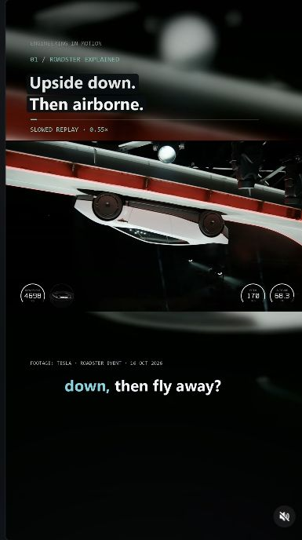
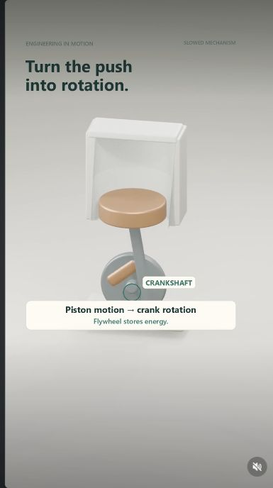
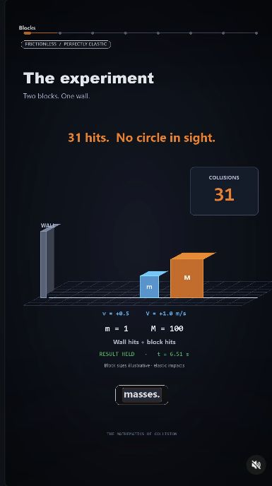

Engineering in Motion / YouTube + Instagram
Making engineering
easier to see.
I make short engineering explainers using simulation, animation, and AI-assisted production. The channel is also a place to build and refine the agent workflow behind each video.
Total views across both platforms
Instagram followers + YouTube subscribers
YouTube watch time
Reported October 21, 2026 · YouTube: 67.7K views, 87 subscribers · Instagram: 74,177 views, 30 followers. Combined views are approximate because YouTube’s total is rounded.

Watch reel ↗Forces + aerodynamics
How can a Roadster
drive upside down?
A closer look at pressure forces and thrust.

Watch reel ↗Mechanisms
Why does an engine
keep turning?
The crank, flywheel, and four-stroke cycle in motion.

Watch reel ↗Physics + simulation
Finding pi
in colliding blocks.
How collision counts reveal a mathematical pattern.
Building my own AI production system
The skills evolve
alongside the channel.
I started turning repeated production tasks into reusable agent skills: instructions, scripts, and saved lessons that I can use again. I now keep separate workflows for narrated engineering explainers, Blender simulations, and channel analysis, so each format has its own production and review criteria.
For example, when captions sat behind the social app controls, I changed the caption rules and added phone-size overlay checks. I also auditioned narration styles and saved the two I preferred as Storyteller and Energetic presets.
- 01
Build skills for different jobs
I separate research and scripting, animation and rendering, narration and captions, and channel audits into reusable skills rather than starting from a blank prompt each time.
- 02
Compare the data behind each reel
I focus analysis on YouTube, comparing views at similar post ages and using retention and engaged views as supporting evidence. Instagram remains a place to share the videos.
- 03
Turn a question into an experiment
I record the variation to test, the metrics to compare, and how long to observe it. Topic, length, and release timing can all affect results, so a higher view count alone does not prove why a video worked.
- 04
Write the lesson back into the workflow
I keep production fixes, personal preferences, and measured findings distinct. Accepted lessons go back into the relevant skill, so the next reel starts with what I have already learned.